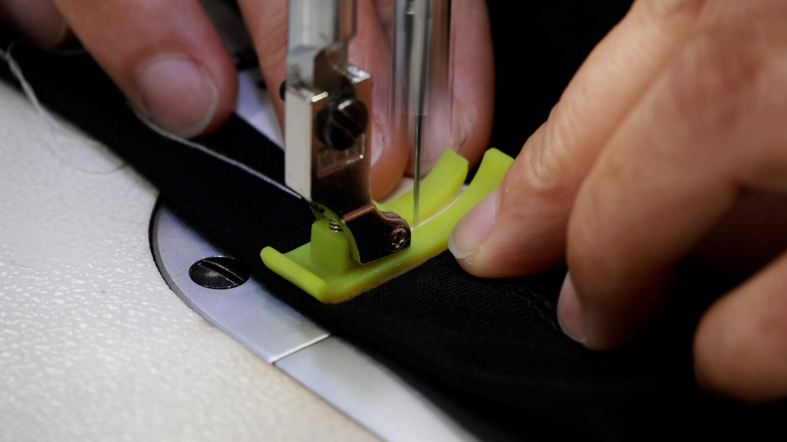
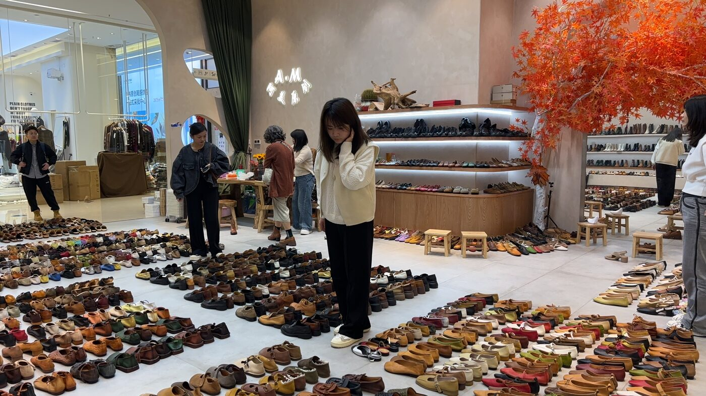

Apparel OEMアパレルOEM
サービス名「MONOID」

アパレルOEMのサービスは、サービス名「MONOID（ものイド）」としてご提供しています。企画・仕様整理から、調達・原価管理、品質管理・貿易実務まで、生産工程全体を仕様で管理します。
01. 企画の具体化と製造相談
ラフなイメージや企画案をもとに、提携メーカーや工場と連携しながら、実現可能な形へと具体化します。
02. 工場選定・原価管理
国内外の提携ネットワークから、ロット数と品質要求に最適な工場をマッチング。適正な原価構成を提案。
03. 品質・工程管理
製造プロセスのモニタリングを行い、納期遅延や不良発生を未然に防ぐ実務型のプロジェクト管理を実施。
04. 物流・納品支援
検品・タグ付け・梱包から、指定倉庫への納入まで。輸入通関手続きを含めた物流動線を確保します。
05. 付属資材の制作
ブランドタグやネームタグなど、製品に必要な付属資材の制作にも対応。製造工程に合わせて一貫して手配します。
知りたいことから、MONOIDの記事を探す
服は、得意な工場でつくる：工場の種類と、探し方・管理の手間
読む ↗
アパレルOEM会社の3つのかたち：商社型・工場直・生産管理パートナー型
読む ↗
アパレルOEMの費用は、何で決まるのか：見積もりの読み方とロット
読む ↗
つくった服を、迷わず届ける：物流と、生産から発送までの流れ
読む ↗
アパレルのブランド立ち上げ：OEMで失敗しないための実務
読む ↗
MONOIDとは：中国・南通での17年から生まれた、アパレルOEMの専門ブランド
読む ↗
南通という街：MONOIDが中国生産の拠点を置く、繊維と交通の要所
読む ↗
アイテム別に見る、アパレルOEMの生産技術：ダウンからニット、バッグまで
読む ↗
服の印象を決める副資材を探す：調達と、ネーム・パッケージの制作
読む ↗
アイテム別のロットと納期の目安
見る ↗
MONOIDコラム一覧
見る ↗
Goods Sourcing雑貨OEM・商品調達

EC事業者様向けに、中国での雑貨の仕入れ・OEM・輸入代行を行っています。仕入れ先の調査からサンプル確認、検品、輸入・通関・物流まで、現地チームがサポートします。
- DIY・手作りキット
- ぬいぐるみ
- アクセサリー
- インテリア雑貨
- バッグ・ポーチ
- ペット用品
- 文房具
Production生産・仕入れ・在庫管理
Import Support輸入サポート
通関・物流・納品までの手配を、中国の現場と日本の窓口が連携して進めます。